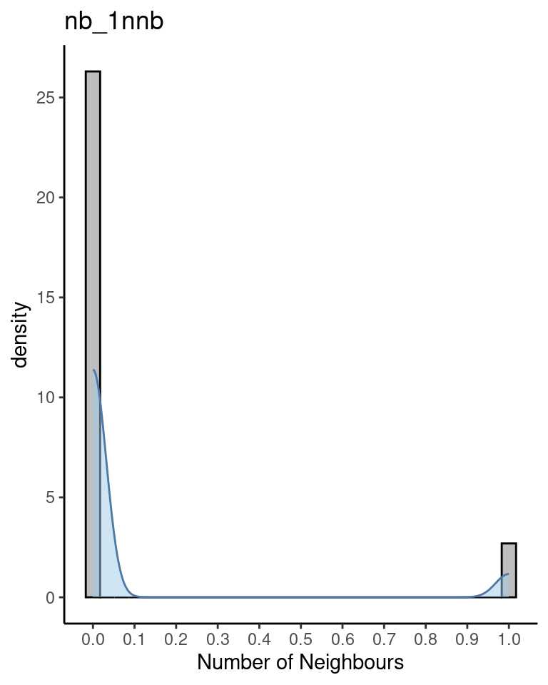
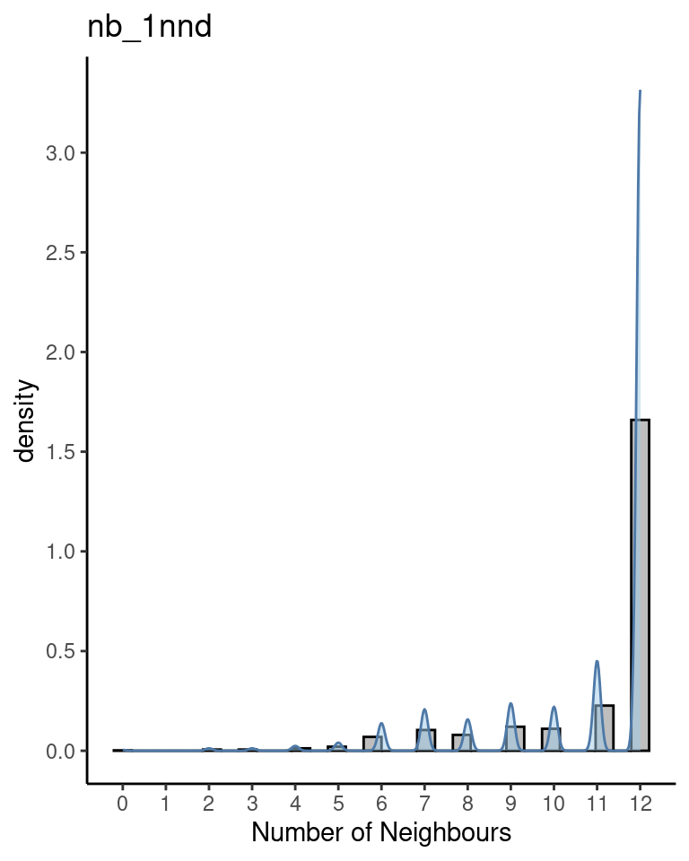
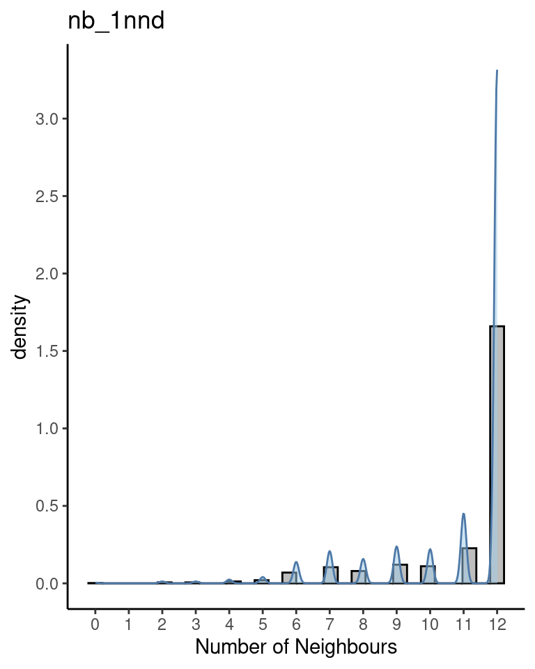

Chapter 3 Practical session 3
This practical session will demonstrate the application of the most commonly used spatial analysis tools to STx data, and how we work with coordinate data alongside expression data. ## Load packages
spdepis a collection of functions to create spatial weights matrix objects from polygon ‘contiguities’, from point patterns by distance and tessellations, for summarizing these objects, and for permitting their use in spatial data analysis like regional aggregation and tests for spatial ‘autocorrelation’.sf(Simple Features for R) is a package that offers support for simple features, a standardized way to encode spatial vector data.GWmodelis a suit of models that fit situations when data are not described well by some global model, but where there are spatial regions where a suitably localised calibration provides a better description.
3.1 Background
3.1.1 Main geocomputatinal data structures
There are three main data structures that we need to have ready before we undertake a geocomputational approach to STx data analysis. Namely these are; (1) geometries (point and polygon), (2) neighbours lists and (3) distance matrices.
Spatial geometries can be points, lines, polygons and pixels. Polygons consist of a multitude of points connected by lines and can have many forms like circle, hexagon, non-canonical polygon etc.
Neighbour lists are special types of lists that contain information about the neighbours of each polygon. The neighbours can be defined either by adjacency or by distance.
Distance matrices contain the distances between different points and can be either weighted or un-weighted. The weighted distances are usually objective to each point and its neighbours. Meaning that the closer or farther a neighbour is from the point of focus, the weight of their distance changes according to an applied kernel. Usually in the case of STx data, like the ones generated by the 10X Visium platform, the un-weighted distance between is two points is in pixels and we acquire it from the
spacerangeroutput.
3.1.2 The sf objects
Package sf represents simple features as native R objects. All functions and methods in sf that operate on spatial data are prefixed by st_, which refers to spatial type. Simple features are implemented as R native data, using simple data structures (S3 classes, lists, matrix, vector). Typical use involves reading, manipulating and writing of sets of features, with attributes and geometries.
As attributes are typically stored in data.frame objects (or the very similar tbl_df), we will also store feature geometries in a data.frame column. Since geometries are not single-valued, they are put in a list-column, a list of length equal to the number of records in the data.frame, with each list element holding the simple feature geometry of that feature. The three classes used to represent simple features are:
sf, the table (data.frame) with feature attributes and feature geometries, which containssfc, the list-column with the geometries for each feature (record), which is composed ofsfg, the feature geometry of an individual simple feature.
3.1.2.1 Simple feature geometry types
The following seven simple feature types are the most common:
| type | description |
|---|---|
POINT |
zero-dimensional geometry containing a single point |
LINESTRING |
sequence of points connected by straight, non-self intersecting line pieces; one-dimensional geometry |
POLYGON |
geometry with a positive area (two-dimensional); sequence of points form a closed, non-self intersecting ring; the first ring denotes the exterior ring, zero or more subsequent rings denote holes in this exterior ring |
MULTIPOINT |
set of points; a MULTIPOINT is simple if no two Points in the MULTIPOINT are equal |
MULTILINESTRING |
set of linestrings |
MULTIPOLYGON |
set of polygons |
GEOMETRYCOLLECTION |
set of geometries of any type except GEOMETRYCOLLECTION |
Each of the geometry types can also be a (typed) empty set, containing zero coordinates (for POINT the standard is not clear how to represent the empty geometry). Empty geometries can be thought of being the analogue to missing (NA) attributes, NULL values or empty lists.
3.1.2.2 sf: objects with simple features
As we usually do not work with geometries of single simple features, but with datasets consisting of sets of features with attributes, the two are put together in sf (simple feature) objects. The following command reads a test dataset called nc from a file that is contained in the sf package:
nc <- st_read(system.file("shape/nc.shp", package = "sf"))## Reading layer `nc' from data source
## `/home/sjcockell/R/x86_64-pc-linux-gnu-library/4.3/sf/shape/nc.shp'
## using driver `ESRI Shapefile'
## Simple feature collection with 100 features and 14 fields
## Geometry type: MULTIPOLYGON
## Dimension: XY
## Bounding box: xmin: -84.32385 ymin: 33.88199 xmax: -75.45698 ymax: 36.58965
## Geodetic CRS: NAD27The short report printed gives the file name, the driver (ESRI Shapefile), mentions that there are 100 features (records, represented as rows) and 14 fields (attributes, represented as columns).
This object is of class:
class(nc)## [1] "sf" "data.frame"meaning it extends (and “is” a) data.frame, but with a single list-column with geometries, which is held in the column with name:
attr(nc, "sf_column")## [1] "geometry"If we print the first three features, we see their attribute values and an abridged version of the geometry
print(nc[9:15], n = 3)which would give the following output:

Figure 3.1: Overview of the sf object.
In the output we see:
- in green a simple feature: a single record, or
data.framerow, consisting of attributes and geometry - in blue a single simple feature geometry (an object of class
sfg) - in red a simple feature list-column (an object of class
sfc, which is a column in thedata.frame) - that although geometries are native R objects, they are printed as well-known text
It is also possible to create data.frame objects with geometry list-columns that are not of class sf, e.g. by:
nc.no_sf <- as.data.frame(nc)
class(nc.no_sf)## [1] "data.frame"However, such objects:
- no longer register which column is the geometry list-column
- no longer have a plot method, and
- lack all of the other dedicated methods for class
sf
3.1.2.3 sfc: simple feature geometry list-column
The column in the sf data.frame that contains the geometries is a list, of class sfc. We can retrieve the geometry list-column in this case by using standard data.frame notation like nc$geom or nc[[15]], but the more general way uses st_geometry:
(nc_geom <- st_geometry(nc))## Geometry set for 100 features
## Geometry type: MULTIPOLYGON
## Dimension: XY
## Bounding box: xmin: -84.32385 ymin: 33.88199 xmax: -75.45698 ymax: 36.58965
## Geodetic CRS: NAD27
## First 5 geometries:## MULTIPOLYGON (((-81.47276 36.23436, -81.54084 3...## MULTIPOLYGON (((-81.23989 36.36536, -81.24069 3...## MULTIPOLYGON (((-80.45634 36.24256, -80.47639 3...## MULTIPOLYGON (((-76.00897 36.3196, -76.01735 36...## MULTIPOLYGON (((-77.21767 36.24098, -77.23461 3...Geometries are printed in abbreviated form, but we can view a complete geometry by selecting it, e.g. the first one by:
nc_geom[[1]]## MULTIPOLYGON (((-81.47276 36.23436, -81.54084 36.27251, -81.56198 36.27359, -81.63306 36.34069, -81.74107 36.39178, -81.69828 36.47178, -81.7028 36.51934, -81.67 36.58965, -81.3453 36.57286, -81.34754 36.53791, -81.32478 36.51368, -81.31332 36.4807, -81.26624 36.43721, -81.26284 36.40504, -81.24069 36.37942, -81.23989 36.36536, -81.26424 36.35241, -81.32899 36.3635, -81.36137 36.35316, -81.36569 36.33905, -81.35413 36.29972, -81.36745 36.2787, -81.40639 36.28505, -81.41233 36.26729, -81.43104 36.26072, -81.45289 36.23959, -81.47276 36.23436)))The way this is printed is called well-known text, and is part of the standards. The word MULTIPOLYGON is followed by three parentheses, because it can consist of multiple polygons, in the form of MULTIPOLYGON(POL1,POL2), where POL1 might consist of an exterior ring and zero or more interior rings, as of (EXT1,HOLE1,HOLE2). Sets of coordinates are held together with parentheses, so we get ((crds_ext)(crds_hole1)(crds_hole2)) where crds_ is a comma-separated set of coordinates of a ring. This leads to the case above, where MULTIPOLYGON(((crds_ext))) refers to the exterior ring (1), without holes (2), of the first polygon (3) - hence three parentheses.
We can see there is a single polygon with no rings:
par(mar = c(0,0,1,0))
plot(nc[1], reset = FALSE) # reset = FALSE: we want to add to a plot with a legend
plot(nc[1,1], col = 'grey', add = TRUE)
Following the MULTIPOLYGON data structure, in R we have a list of lists of lists of matrices. For instance,
we get the first 3 coordinate pairs of the second exterior ring (first ring is always exterior) for the geometry
of feature 4 by:
nc_geom[[4]][[2]][[1]][1:3,]## [,1] [,2]
## [1,] -76.02717 36.55672
## [2,] -75.99866 36.55665
## [3,] -75.91192 36.54253Geometry columns have their own class,
class(nc_geom)## [1] "sfc_MULTIPOLYGON" "sfc"3.1.2.4 sfg: simple feature geometry
Simple feature geometry (sfg) objects carry the geometry for a single feature, e.g. a point, linestring or polygon.
Simple feature geometries are implemented as R native data, using the following rules
- a single POINT is a numeric vector
- a set of points, e.g. in a LINESTRING or ring of a POLYGON is a
matrix, each row containing a point - any other set is a
list
The below figure illustrates the different types of geometries:

Geometries can also be empty, as in
(x <- st_geometrycollection())
## GEOMETRYCOLLECTION EMPTY
length(x)
## [1] 0The above are taken from the very well written, well-descriptive and thorough sf package vignette.
3.2 Data structures preparation
For this practical we will be using a human steatotic kidney dataset from the Liver Atlas (Guilliams et al. 2022). Specifically we will use the JBO019 sample.
3.2.1 Load new dataset
First we generate the SpatialFeaturesExperiment object which is an extension of the SpatialExperiment (SPE) object that we used in the 2nd practical session. The difference is that the SFE object has incorporated the sf object structure and thus can accommodate the use of geocomputational tools.
sampleDir <- "./data/spaceranger_outs/Human_Liver_Steatotic/JBO019_Results"
sampleNames <- "JBO019"
sfe <- read10xVisiumSFE(samples = sampleDir,
sample_id = sampleNames,
type = "sparse",
data = "filtered",
images = "lowres",
style = "W",
zero.policy = TRUE)
ground_truth <- read_table("./data/spotzonationGroup.txt")##
## ── Column specification ────────────────────────────────────────────────────────
## cols(
## Barcode = col_character(),
## sample_id = col_character(),
## annotation = col_character()
## )is_mito <- grepl("(^MT-)|(^mt-)", rowData(sfe)$symbol)
sfe <- addPerLocQC(sfe, gTruth = ground_truth, assay = "counts", 2, subsets = list(mito = is_mito))
sfe <- addGeometries(sfe, samples = sampleDir, sample_id = sampleNames, res = "fullres")
ggplot() +
geom_sf(aes(geometry = colGeometries(sfe)$spotHex$geometry, fill = colData(sfe)$annotation)) +
theme_void() +
theme(legend.position = "right") +
labs(fill = "Annotation")
sfe <- addPerGeneQC(sfe, assay = "counts", version = 92)
sfe <- get.spatialNeighGraphs(sfe, sampleNames, type = "knearneigh", style = "W", distMod = "raw", k = 6)
colData(sfe)## DataFrame with 1185 rows and 15 columns
## Barcode sample_id in_tissue array_row array_col
## <character> <character> <logical> <integer> <integer>
## AAACAAGTATCTCCCA-1 AAACAAGTATCTCCCA-1 JBO019 TRUE 50 102
## AAACATTTCCCGGATT-1 AAACATTTCCCGGATT-1 JBO019 TRUE 61 97
## AAACCCGAACGAAATC-1 AAACCCGAACGAAATC-1 JBO019 TRUE 45 115
## AAACGAGACGGTTGAT-1 AAACGAGACGGTTGAT-1 JBO019 TRUE 35 79
## AAACTAACGTGGCGAC-1 AAACTAACGTGGCGAC-1 JBO019 TRUE 8 110
## ... ... ... ... ... ...
## TTGTAATCCGTACTCG-1 TTGTAATCCGTACTCG-1 JBO019 TRUE 35 55
## TTGTGAACCTAATCCG-1 TTGTGAACCTAATCCG-1 JBO019 TRUE 56 90
## TTGTGCAGCCACGTCA-1 TTGTGCAGCCACGTCA-1 JBO019 TRUE 60 74
## TTGTGTTTCCCGAAAG-1 TTGTGTTTCCCGAAAG-1 JBO019 TRUE 51 59
## TTGTTGTGTGTCAAGA-1 TTGTTGTGTGTCAAGA-1 JBO019 TRUE 31 77
## Capt_area annotation index sparsity sum
## <character> <character> <character> <numeric> <numeric>
## AAACAAGTATCTCCCA-1 1 NA spot_1 0.910410 13443
## AAACATTTCCCGGATT-1 1 NA spot_2 0.967805 2648
## AAACCCGAACGAAATC-1 1 Mid spot_3 0.864958 27733
## AAACGAGACGGTTGAT-1 1 Central spot_4 0.835818 32973
## AAACTAACGTGGCGAC-1 1 NA spot_5 0.995418 400
## ... ... ... ... ... ...
## TTGTAATCCGTACTCG-1 1 NA spot_1181 0.933716 7612
## TTGTGAACCTAATCCG-1 1 NA spot_1182 0.955831 4299
## TTGTGCAGCCACGTCA-1 1 NA spot_1183 0.978252 1452
## TTGTGTTTCCCGAAAG-1 1 NA spot_1184 0.956778 3831
## TTGTTGTGTGTCAAGA-1 1 Mid spot_1185 0.852160 27755
## detected subsets_mito_sum subsets_mito_detected
## <integer> <numeric> <integer>
## AAACAAGTATCTCCCA-1 2933 1021 12
## AAACATTTCCCGGATT-1 1054 285 12
## AAACCCGAACGAAATC-1 4421 2087 12
## AAACGAGACGGTTGAT-1 5375 821 12
## AAACTAACGTGGCGAC-1 150 182 11
## ... ... ... ...
## TTGTAATCCGTACTCG-1 2170 733 11
## TTGTGAACCTAATCCG-1 1446 515 12
## TTGTGCAGCCACGTCA-1 712 54 10
## TTGTGTTTCCCGAAAG-1 1415 422 11
## TTGTTGTGTGTCAAGA-1 4840 906 12
## subsets_mito_percent total
## <numeric> <numeric>
## AAACAAGTATCTCCCA-1 7.59503 13443
## AAACATTTCCCGGATT-1 10.76284 2648
## AAACCCGAACGAAATC-1 7.52533 27733
## AAACGAGACGGTTGAT-1 2.48992 32973
## AAACTAACGTGGCGAC-1 45.50000 400
## ... ... ...
## TTGTAATCCGTACTCG-1 9.62953 7612
## TTGTGAACCTAATCCG-1 11.97953 4299
## TTGTGCAGCCACGTCA-1 3.71901 1452
## TTGTGTTTCCCGAAAG-1 11.01540 3831
## TTGTTGTGTGTCAAGA-1 3.26428 27755rowData(sfe)## DataFrame with 32738 rows and 21 columns
## id gene_name biotype
## <character> <character> <character>
## ENSG00000243485 ENSG00000243485 MIR1302-2HG lincRNA
## ENSG00000237613 ENSG00000237613 FAM138A lincRNA
## ENSG00000186092 ENSG00000186092 OR4F5 protein_coding
## ENSG00000238009 ENSG00000238009 AL627309.1 lincRNA
## ENSG00000239945 ENSG00000239945 AL627309.3 lincRNA
## ... ... ... ...
## ENSG00000215635 ENSG00000215635 NA NA
## ENSG00000268590 ENSG00000268590 NA NA
## ENSG00000251180 ENSG00000251180 NA NA
## ENSG00000215616 ENSG00000215616 NA NA
## ENSG00000215611 ENSG00000215611 NA NA
## description symbol mean detected
## <character> <character> <numeric> <numeric>
## ENSG00000243485 MIR1302-2 host gene MIR1302-10 0.00000000 0.000000
## ENSG00000237613 family with sequence.. FAM138A 0.00000000 0.000000
## ENSG00000186092 olfactory receptor f.. OR4F5 0.00000000 0.000000
## ENSG00000238009 RP11-34P13.7 0.00590717 0.590717
## ENSG00000239945 RP11-34P13.8 0.00000000 0.000000
## ... ... ... ... ...
## ENSG00000215635 NA AC145205.1 0 0
## ENSG00000268590 NA BAGE5 0 0
## ENSG00000251180 NA CU459201.1 0 0
## ENSG00000215616 NA AC002321.2 0 0
## ENSG00000215611 NA AC002321.1 0 0
## total JBO019.sparsity JBO019.total JBO019.nLocations
## <numeric> <numeric> <numeric> <integer>
## ENSG00000243485 0 1.000000 0 0
## ENSG00000237613 0 1.000000 0 0
## ENSG00000186092 0 1.000000 0 0
## ENSG00000238009 7 0.994093 7 7
## ENSG00000239945 0 1.000000 0 0
## ... ... ... ... ...
## ENSG00000215635 0 1 0 0
## ENSG00000268590 0 1 0 0
## ENSG00000251180 0 1 0 0
## ENSG00000215616 0 1 0 0
## ENSG00000215611 0 1 0 0
## JBO019.s_min JBO019.max JBO019.s_mean JBO019.s_median
## <numeric> <numeric> <numeric> <numeric>
## ENSG00000243485 Inf 0 NaN NA
## ENSG00000237613 Inf 0 NaN NA
## ENSG00000186092 Inf 0 NaN NA
## ENSG00000238009 1 1 1 1
## ENSG00000239945 Inf 0 NaN NA
## ... ... ... ... ...
## ENSG00000215635 Inf 0 NaN NA
## ENSG00000268590 Inf 0 NaN NA
## ENSG00000251180 Inf 0 NaN NA
## ENSG00000215616 Inf 0 NaN NA
## ENSG00000215611 Inf 0 NaN NA
## JBO019.s_SD JBO019.p_mean JBO019.p_median JBO019.p_SD
## <numeric> <numeric> <numeric> <numeric>
## ENSG00000243485 NA 0.00000000 0 0.0000000
## ENSG00000237613 NA 0.00000000 0 0.0000000
## ENSG00000186092 NA 0.00000000 0 0.0000000
## ENSG00000238009 0 0.00590717 0 0.0766631
## ENSG00000239945 NA 0.00000000 0 0.0000000
## ... ... ... ... ...
## ENSG00000215635 NA 0 0 0
## ENSG00000268590 NA 0 0 0
## ENSG00000251180 NA 0 0 0
## ENSG00000215616 NA 0 0 0
## ENSG00000215611 NA 0 0 0
## JBO019.s_CV JBO019.p_CV
## <numeric> <numeric>
## ENSG00000243485 NA NaN
## ENSG00000237613 NA NaN
## ENSG00000186092 NA NaN
## ENSG00000238009 0 1297.8
## ENSG00000239945 NA NaN
## ... ... ...
## ENSG00000215635 NA NaN
## ENSG00000268590 NA NaN
## ENSG00000251180 NA NaN
## ENSG00000215616 NA NaN
## ENSG00000215611 NA NaNcolGeometries(sfe)## List of length 3
## names(3): spotPoly spotCntd spotHexcolGraphs(sfe)## $col
## Characteristics of weights list object:
## Neighbour list object:
## Number of regions: 1185
## Number of nonzero links: 7110
## Percentage nonzero weights: 0.5063291
## Average number of links: 6
## Non-symmetric neighbours list
##
## Weights style: W
## Weights constants summary:
## n nn S0 S1 S2
## W 1185 1404225 1185 385.3889 4770# >>>>>>>>>possible break point to continue on Pract 4<<<<<<<<<<<<<<< #
# Above we load the data and calculate some statistics, generate some
# neighbour graphs and we can explore the data structures. Below we
# apply the QC.
# There is a catch in the above. The get.spatialNeighGraphs is going to be used
# here to showcase the neighbour graphs but actually it is better to be called
# after we remove unwanted locations through QC application
# Ensembl version 92 does not match the dataset. Need to find out which
# ensembl version they used with SpaceRanger. Otherwise some genes will not have
# proper annotation.
# >>>>>>>>>possible break point to continue on Pract 4<<<<<<<<<<<<<<< #
## Select library size threshold
qc_lib_size <- colData(sfe)$sum < 700
## Check how many spots are filtered out
table(qc_lib_size)## qc_lib_size
## FALSE TRUE
## 1171 14## Add threshold in colData
colData(sfe)$qc_lib_size <- qc_lib_size
## Select expressed genes threshold
qc_detected <- colData(sfe)$detected < 500
## Check how many spots are filtered out
table(qc_detected)## qc_detected
## FALSE TRUE
## 1168 17## Add threshold in colData
colData(sfe)$qc_detected <- qc_detected
## Select expressed genes threshold
qc_mito <- colData(sfe)$subsets_mito_percent > 25
## Check how many spots are filtered out
table(qc_mito)## qc_mito
## FALSE TRUE
## 1184 1## Add threshold in colData
colData(sfe)$qc_mito <- qc_mito
## Check the number of discarded spots for each metric
apply(cbind(qc_lib_size, qc_detected, qc_mito), 2, sum)## qc_lib_size qc_detected qc_mito
## 14 17 1## Combine together the set of discarded spots
discard <- qc_lib_size | qc_detected | qc_mito
## Store the set in the object
colData(sfe)$discard <- discard
## Check the spatial pattern of combined set of discarded spots
plotQC(sfe, type = "spots",
discard = "discard")
## remove combined set of low-quality spots
sfe <- sfe[, !colData(sfe)$discard]
## Calculate library size factors
sfe <- computeLibraryFactors(sfe)
## Have a look at the size factors
summary(sizeFactors(sfe))## Min. 1st Qu. Median Mean 3rd Qu. Max.
## 0.06573 0.36598 0.95403 1.00000 1.55396 2.78681# calculate logcounts using library size factors
sfe <- logNormCounts(sfe)
# FEATURE SELECTION
# remove mitochondrial genes
sfe <- sfe[!is_mito, ]
# fit mean-variance relationship
dec <- modelGeneVar(sfe)
# select top HVGs
top_hvgs <- getTopHVGs(dec, prop = 0.1)3.2.1.0.0.0.0.0.0.0.0.0.0.0.0.0.0.0.0.0.0.0.0.0.0.0.0.0.0.0.0.0.0.0.0.0.0.0.0.0.0.0.0.0.0.0.0.0.0.0.0.0.0.0.0.0.0.0.0.0.0.0.0.0.0.0.0.0.0.0.0.0.0.0.0.0.0.0.0.1
## Load counts table
inputD <- readRDS(file = "./data/hsLivSteat_JBO019_inputD.rds")
inputD[1:5, 1:3]## AAACAAGTATCTCCCA.1 AAACATTTCCCGGATT.1 AAACCCGAACGAAATC.1
## ENSG00000243485 0 0 0
## ENSG00000237613 0 0 0
## ENSG00000186092 0 0 0
## ENSG00000238009 0 0 0
## ENSG00000239945 0 0 0Then we load the spot metadata. The imported table has the below columns:
- Barcode: the spot barcode (note that we substituted the “-” with a “.” to match the column names in the inputD because it is not good practise to have “-” in column names in R).
- Section: whether the spot is on- or off- tissue (on-tissue = 1, off-tissue = 0).
- Spot_Y/ Spot_X: X and Y spot location on the capture area array.
- Image_Y/ Image_X: X and Y spot coordinates in the full resolution image.
- pixel_x/ pixel_y: X and Y spot coordinates in the low resolution image.
## Load spot metadata
inputMD <- readRDS(file = "./data/hsLivSteat_JBO019_inputMD.rds")
head(inputMD)## Barcode Section Spot_Y Spot_X Image_Y Image_X pixel_x pixel_y
## 1 ACGCCTGACACGCGCT.1 0 0 0 16961 2500 68.85156 467.1165
## 2 TACCGATCCAACACTT.1 0 1 1 16847 2696 74.24952 463.9769
## 3 ATTAAAGCGGACGAGC.1 0 0 2 16735 2499 68.82401 460.8923
## 4 GATAAGGGACGATTAG.1 0 1 3 16621 2695 74.22198 457.7527
## 5 GTGCAAATCACCAATA.1 0 0 4 16509 2497 68.76893 454.6681
## 6 TGTTGGCTGGCGGAAG.1 0 1 5 16395 2693 74.16690 451.52853.2.2 Create point geometries
First we want to extract the pixel coordinates from the inputMD data frame and then we will generate the point geometries (centroids) from all spots of the 10X Visium capture area. This helps to tessellate space better in the next step.
## Extract coordinates
spot_position <- inputMD %>%
select(c("Barcode", "pixel_x", "pixel_y", "Section"))
head(spot_position, 5)
## Barcode pixel_x pixel_y Section
## 1 ACGCCTGACACGCGCT.1 68.85156 467.1165 0
## 2 TACCGATCCAACACTT.1 74.24952 463.9769 0
## 3 ATTAAAGCGGACGAGC.1 68.82401 460.8923 0
## 4 GATAAGGGACGATTAG.1 74.22198 457.7527 0
## 5 GTGCAAATCACCAATA.1 68.76893 454.6681 0
## Convert spots to centroids
centroids <- spot_position %>%
st_as_sf(coords = c("pixel_x", "pixel_y"),
remove = FALSE)
head(centroids, 5)
## Simple feature collection with 5 features and 4 fields
## Geometry type: POINT
## Dimension: XY
## Bounding box: xmin: 68.76893 ymin: 454.6681 xmax: 74.24952 ymax: 467.1165
## CRS: NA
## Barcode pixel_x pixel_y Section geometry
## 1 ACGCCTGACACGCGCT.1 68.85156 467.1165 0 POINT (68.85156 467.1165)
## 2 TACCGATCCAACACTT.1 74.24952 463.9769 0 POINT (74.24952 463.9769)
## 3 ATTAAAGCGGACGAGC.1 68.82401 460.8923 0 POINT (68.82401 460.8923)
## 4 GATAAGGGACGATTAG.1 74.22198 457.7527 0 POINT (74.22198 457.7527)
## 5 GTGCAAATCACCAATA.1 68.76893 454.6681 0 POINT (68.76893 454.6681)3.2.3 Tesselate space
Here we will take the steps towards tessellating space. This tessellation, brakes the area that surrounds the spots and as a result we can use it to find neighbours by adjacency later on. We need to always keep in mind that although tessellation makes the spots have common borders, the 10X Visium spots have a distance between them that is approximately 50μm.
- First, we combine the points we calculated earlier into a multipoint geometry.
- Second, we tessellate space around the points using the Voronoi tessellation.
- Third, we can cut the tessellation around the edges because tessellation extends to infinity.
## Combine the points into a multipoint geometry:
cntd_union <- st_union(centroids)
head(cntd_union)## Geometry set for 1 feature
## Geometry type: MULTIPOINT
## Dimension: XY
## Bounding box: xmin: 66.45552 ymin: 69.04434 xmax: 486.1195 ymax: 467.1165
## CRS: NA## MULTIPOINT ((66.45552 74.69017), (66.5106 80.91...## Use the union of points to generate a voronoi object
voronoi <- st_voronoi(cntd_union, bOnlyEdges = TRUE)
head(voronoi)## Geometry set for 1 feature
## Geometry type: MULTILINESTRING
## Dimension: XY
## Bounding box: xmin: -353.2085 ymin: -350.6197 xmax: 905.7835 ymax: 886.7805
## CRS: NA## MULTILINESTRING ((68.32756 84.03226, 70.14669 8...## Create an enveloped voronoi tessellation around the tissue
voronoi_env <- st_intersection(st_cast(voronoi), st_convex_hull(cntd_union))
head(voronoi_env)## Geometry set for 1 feature
## Geometry type: MULTILINESTRING
## Dimension: XY
## Bounding box: xmin: 66.47385 ymin: 69.06262 xmax: 486.1006 ymax: 467.0982
## CRS: NA## MULTILINESTRING ((68.32756 84.03226, 70.14669 8...## Plot tessellation as is
ggplot(data = voronoi) + geom_sf() + labs(title = "Tessellation") + theme_void()
## Plot enveloped tessellation
ggplot(data = voronoi_env) +
geom_sf() +
labs(title = "Tessellation cut to capture area") +
theme_void()

3.2.4 Polygonise the tessellation
Here we will extract polygons from the tessellation object only for the spots that are on-tissue. Meaning, they have a value of 1 in the Section column.
## Generate the POLYGONS from the MULTILINESTRING
polygons <- st_polygonize(voronoi_env) %>% # polygonise the tessellation
st_cast() %>% # convert GEOMETRYCOLLECTION to multiple POLYGONS
st_sf() %>% # convert sfc object to sf for st_join afterwards
st_join(.,
centroids[centroids$Section == 1,],
join = st_contains,
left = FALSE) %>%
dplyr::rename(geom_pol = geometry) %>% # Join the centroids with the POLYGONS
mutate(Barcode_rn = Barcode) %>% # duplicate the barcode column
column_to_rownames("Barcode_rn") %>% # move duplicate column to row names
st_sf() # convert back to sf (mutate makes it a df)
head(polygons)## Simple feature collection with 6 features and 4 fields
## Geometry type: POLYGON
## Dimension: XY
## Bounding box: xmin: 106.5067 ymin: 121.1432 xmax: 201.425 ymax: 304.4226
## CRS: NA
## Barcode pixel_x pixel_y Section
## AAACTAACGTGGCGAC.1 AAACTAACGTGGCGAC.1 110.1074 124.2633 1
## GACTAAGATCATGCAC.1 GACTAAGATCATGCAC.1 192.4814 301.2944 1
## ATCGACTCTTTCCGTT.1 ATCGACTCTTTCCGTT.1 192.3437 276.3701 1
## TGGTTCGTAGCAAAGG.1 TGGTTCGTAGCAAAGG.1 192.4539 295.0702 1
## GCTCTAAACCCTGACG.1 GCTCTAAACCCTGACG.1 197.8243 285.6789 1
## TCAAACAACCGCGTCG.1 TCAAACAACCGCGTCG.1 197.7692 279.4547 1
## geom_pol
## AAACTAACGTGGCGAC.1 POLYGON ((108.2826 121.1592...
## GACTAAGATCATGCAC.1 POLYGON ((188.8807 301.3139...
## ATCGACTCTTTCCGTT.1 POLYGON ((190.496 273.2742,...
## TGGTTCGTAGCAAAGG.1 POLYGON ((190.6062 291.9742...
## GCTCTAAACCCTGACG.1 POLYGON ((195.9765 282.5829...
## TCAAACAACCGCGTCG.1 POLYGON ((194.1607 279.4881...As you may have observed we joined the polygons object with the centroids object so that we can add the rest of the information like Barcode, pixel_x, and pixel_y.
If we plot it:
## Plot on tissue polygons
ggplot(data = polygons) + geom_sf(aes(geometry = geom_pol)) + theme_void()Because there are times that we will need the polygons and times that we will need their centroids we can add both geometries in the polygons object.
## Update the polygon object to keep the centroid geometries as well
polygons <- polygons %>% # rename polygons geom column
left_join(as.data.frame(centroids)) %>% # left joint pols and cntds
dplyr::rename(geom_cntd = geometry) %>% # rename centroids geom column
st_sf(sf_column_name = "geom_pol") # set polygons geom column to be the default (one must be)
head(polygons)## Simple feature collection with 6 features and 4 fields
## Active geometry column: geom_pol
## Geometry type: POLYGON
## Dimension: XY
## Bounding box: xmin: 106.5067 ymin: 121.1432 xmax: 201.425 ymax: 304.4226
## CRS: NA
## Barcode pixel_x pixel_y Section geom_pol
## 1 AAACTAACGTGGCGAC.1 110.1074 124.2633 1 POLYGON ((108.2826 121.1592...
## 2 GACTAAGATCATGCAC.1 192.4814 301.2944 1 POLYGON ((188.8807 301.3139...
## 3 ATCGACTCTTTCCGTT.1 192.3437 276.3701 1 POLYGON ((190.496 273.2742,...
## 4 TGGTTCGTAGCAAAGG.1 192.4539 295.0702 1 POLYGON ((190.6062 291.9742...
## 5 GCTCTAAACCCTGACG.1 197.8243 285.6789 1 POLYGON ((195.9765 282.5829...
## 6 TCAAACAACCGCGTCG.1 197.7692 279.4547 1 POLYGON ((194.1607 279.4881...
## geom_cntd
## 1 POINT (110.1074 124.2633)
## 2 POINT (192.4814 301.2944)
## 3 POINT (192.3437 276.3701)
## 4 POINT (192.4539 295.0702)
## 5 POINT (197.8243 285.6789)
## 6 POINT (197.7692 279.4547)As we can see here we have two geometry columns; one named geom_pol and one named geom_cntd. As a result we need to have one of these two as the active geometry column for the polygons object of class sf. We can see at the top of the printed output that the active geometry column is geom_pol. In general we can switch between geometry columns using: st_geometry(sf_object) <- "geom_column_to_change_to"
3.2.5 Identify neighbours
3.2.5.1 By contiguity
We can contiguity-based neighbours for each spot using the poly2nb function from spdep. The function is using heuristics to identify polygons sharing boundary points as neighbours. It also has a snap = argument, to allow the shared boundary points to be a short distance from one another. Here we select snap = 0 because the tessellation generated polygons with shared borders. Finally, the queen = argument is set to TRUE. This means that the function will look for a chess queen-style of contiguities.
## Get contiguity neighbours
nb_adjc <- poly2nb(pl = polygons,
snap = 0,
queen = TRUE)
length(nb_adjc)
## [1] 1184
head(nb_adjc)
## [[1]]
## [1] 0
##
## [[2]]
## [1] 4 7 11
##
## [[3]]
## [1] 6 10
##
## [[4]]
## [1] 2 7 8
##
## [[5]]
## [1] 6 8 12 15
##
## [[6]]
## [1] 3 5 10 12 13nb_adjc_n <- card(nb_adjc)
ggplot() +
geom_histogram(aes(x = nb_adjc_n, y = after_stat(density)),
colour = "black",
fill = "grey") +
geom_density(aes(x = nb_adjc_n),
alpha = 0.5,
adjust = 0.5,
fill = "#A0CBE8",
colour = "#4E79A7") +
scale_x_continuous(breaks = scales::pretty_breaks(n = 6)) +
scale_y_continuous(breaks = scales::pretty_breaks(n = 10)) +
xlab("Number of Neighbours") +
theme_classic()
ggplot() +
geom_sf(data = polygons,
aes(geometry = geom_pol),
colour = "grey30", fill = "white") +
geom_sf(data = as(nb2lines(nb_adjc, coords = polygons$geom_cntd), "sf"),
colour = "black", linewidth = 0.25) +
geom_sf(data = polygons,
aes(geometry = geom_cntd),
colour = "black", size = 1) +
theme_void()
As you can see, the neighbours object is a list of length equal to the number of spots we have in the dataset. Each element of the list represents a spot and the numbers stored inside the indexes of the neighbouring spots and the spots have a different numbers of neighbours. The connectivity histogram visualises the distribution of the number of neighbours in the data.
3.2.5.2 By graph
Once representative points are available, the criteria for neighbourhood can be extended from just contiguity to include graph measures, distance thresholds, and 𝑘-nearest neighbours.
The most direct graph representation of neighbours is to make a Delaunay triangulation of the points, which extends outwards to the convex hull of the points. Note that graph-based representations construct the interpoint relationships based on Euclidean distance. Because it joins distant points around the convex hull, it may be worthwhile to thin the triangulation as a Sphere of Influence (SOI) graph, removing links that are relatively long. Points are SOI neighbours if circles centred on the points, of radius equal to the points’ nearest neighbour distances, intersect in two places (Avis and Horton 1985).
## Set centroids as default geometry
st_geometry(polygons) <- "geom_cntd"
## Get the neighbour names
nb_names <- polygons$Barcode
## By Delaunay triangulation
nb_tri <- tri2nb(polygons$geom_cntd, row.names = nb_names)
length(nb_tri)
## [1] 1184
head(nb_tri)
## [[1]]
## [1] 2 3 4 52 53 61 71 78 79 80 81 82 83 84 85 86 88 91 103
## [20] 155
##
## [[2]]
## [1] 1 4 7 9 11
##
## [[3]]
## [1] 1 4 5 6 10 35 61
##
## [[4]]
## [1] 1 2 3 5 7 8
##
## [[5]]
## [1] 3 4 6 8 12 15
##
## [[6]]
## [1] 3 5 10 12 13nb_tri_n <- card(nb_tri)
ggplot() +
geom_histogram(aes(x = nb_tri_n, y = after_stat(density)),
colour = "black",
fill = "grey") +
geom_density(aes(x = nb_tri_n),
alpha = 0.5,
adjust = 0.5,
fill = "#A0CBE8",
colour = "#4E79A7") +
scale_x_continuous(breaks = scales::pretty_breaks(n = 10)) +
scale_y_continuous(breaks = scales::pretty_breaks(n = 10)) +
xlab("Number of Neighbours") +
theme_classic()
ggplot() +
geom_sf(data = polygons,
aes(geometry = geom_pol),
colour = "grey30", fill = "white") +
geom_sf(data = as(nb2lines(nb_tri, coords = polygons$geom_cntd), "sf"),
colour = "black", linewidth = 0.25) +
geom_sf(data = polygons,
aes(geometry = geom_cntd),
colour = "black", size = 1) +
theme_void()## Get neighbours by SOI
nb_soi <- graph2nb(soi.graph(nb_tri, polygons$geom_cntd),
row.names = nb_names)
length(nb_soi)
## [1] 1184
head(nb_soi)
## [[1]]
## [1] 52 53 78 79
##
## [[2]]
## [1] 4 7 9 11
##
## [[3]]
## [1] 5 6 10
##
## [[4]]
## [1] 2 5 7 8
##
## [[5]]
## [1] 3 4 6 8 12 15
##
## [[6]]
## [1] 3 5 10 12 13
nb_soi_n <- card(nb_soi)ggplot() +
geom_histogram(aes(x = nb_soi_n, y = after_stat(density)),
colour = "black",
fill = "grey") +
geom_density(aes(x = nb_soi_n),
alpha = 0.5,
adjust = 0.5,
fill = "#A0CBE8",
colour = "#4E79A7") +
scale_x_continuous(breaks = scales::pretty_breaks(n = 8)) +
scale_y_continuous(breaks = scales::pretty_breaks(n = 10)) +
xlab("Number of Neighbours") +
theme_classic()
ggplot() +
geom_sf(data = polygons,
aes(geometry = geom_pol),
colour = "grey30", fill = "white") +
geom_sf(data = as(nb2lines(nb_soi, coords = polygons$geom_cntd), "sf"),
colour = "black", linewidth = 0.25) +
geom_sf(data = polygons,
aes(geometry = geom_cntd),
colour = "black", size = 1) +
theme_void()
## Get neighbours by Gabriel graph
nb_gbn <- graph2nb(gabrielneigh(polygons$geom_cntd),
row.names = nb_names)
length(nb_gbn)
## [1] 1184
head(nb_gbn)
## [[1]]
## [1] 53
##
## [[2]]
## [1] 4 7 11
##
## [[3]]
## [1] 6 10
##
## [[4]]
## [1] 7 8
##
## [[5]]
## [1] 6 8 12 15
##
## [[6]]
## [1] 10 12 13
nb_gbn_n <- card(nb_gbn)ggplot() +
geom_histogram(aes(x = nb_gbn_n, y = after_stat(density)),
colour = "black",
fill = "grey") +
geom_density(aes(x = nb_gbn_n),
alpha = 0.5,
adjust = 0.5,
fill = "#A0CBE8",
colour = "#4E79A7") +
scale_x_continuous(breaks = scales::pretty_breaks(n = 4)) +
scale_y_continuous(breaks = scales::pretty_breaks(n = 10)) +
xlab("Number of Neighbours") +
theme_classic()
ggplot() +
geom_sf(data = polygons,
aes(geometry = geom_pol),
colour = "grey30", fill = "white") +
geom_sf(data = as(nb2lines(nb_gbn, coords = polygons$geom_cntd), "sf"),
colour = "black", linewidth = 0.25) +
geom_sf(data = polygons,
aes(geometry = geom_cntd),
colour = "black", size = 1) +
theme_void()## Get Relative graph neighbours
nb_rn <- graph2nb(relativeneigh(polygons$geom_cntd),
row.names = nb_names)
length(nb_rn)
## [1] 1184
head(nb_rn)
## [[1]]
## [1] 53
##
## [[2]]
## [1] 4
##
## [[3]]
## [1] 6
##
## [[4]]
## [1] 7
##
## [[5]]
## [1] 6 8 15
##
## [[6]]
## [1] 10
nb_rn_n <- card(nb_rn)ggplot() +
geom_histogram(aes(x = nb_rn_n, y = after_stat(density)),
colour = "black",
fill = "grey") +
geom_density(aes(x = nb_rn_n),
alpha = 0.5,
adjust = 0.5,
fill = "#A0CBE8",
colour = "#4E79A7") +
scale_x_continuous(breaks = scales::pretty_breaks(n = 10)) +
scale_y_continuous(breaks = scales::pretty_breaks(n = 10)) +
xlab("Number of Neighbours") +
theme_classic()
ggplot() +
geom_sf(data = polygons,
aes(geometry = geom_pol),
colour = "grey30", fill = "white") +
geom_sf(data = as(nb2lines(nb_rn, coords = polygons$geom_cntd), "sf"),
colour = "black", linewidth = 0.25) +
geom_sf(data = polygons,
aes(geometry = geom_cntd),
colour = "black", size = 1) +
theme_void()

Delaunay triangulation neighbours and SOI neighbours are symmetric by design – if 𝑖 is a neighbour of 𝑗, then 𝑗 is a neighbour of 𝑖. The Gabriel graph is also a subgraph of the Delaunay triangulation, retaining a different set of neighbours (Matula and Sokal 1980). It does not, however, guarantee symmetry; the same applies to Relative graph neighbours (Toussaint 1980).
3.2.5.3 By distance
An alternative method is to choose the 𝑘 nearest points as neighbours – this adapts across the study area, taking account of differences in the densities of areal entities. Naturally, in the overwhelming majority of cases, it leads to asymmetric neighbours, but will ensure that all areas have 𝑘 neighbours.
## Set centroids as default geometry
st_geometry(polygons) <- "geom_cntd"
## Get distance-based neighbours
nb_knn <- knn2nb(knearneigh(polygons, k = 6),
row.names = nb_names)
length(nb_knn)
## [1] 1184
head(nb_knn)
## [[1]]
## [1] 52 53 74 76 77 78
##
## [[2]]
## [1] 4 7 8 9 11 19
##
## [[3]]
## [1] 5 6 10 12 13 18
##
## [[4]]
## [1] 2 5 7 8 11 14
##
## [[5]]
## [1] 6 8 12 13 14 15
##
## [[6]]
## [1] 3 5 10 12 13 18ggplot() +
geom_sf(data = polygons,
aes(geometry = geom_pol),
colour = "grey30", fill = "white") +
geom_sf(data = as(nb2lines(nb_knn, coords = polygons$geom_cntd), "sf"),
colour = "black", linewidth = 0.25) +
geom_sf(data = polygons,
aes(geometry = geom_cntd),
colour = "black", size = 1) +
theme_void()As you can see, this neighbours object is also a list of length equal to the number of spots we have in the dataset with the same content as the one earlier. Also, in this list all spots have the same number of neighbours since we selected k = 6 which means we have the 6 nearest by distance spots. Another interesting fact here is that spots that are not adjacent to each other now might be neighbours.
Another way to find neighbours by distance is to first generate a graph for k = 1. This way we can find the shortest and the longest distance needed for a spot to acquire one neighbour. Then, we can use another function called dnearneigh which is used to find neighbours with an interpoint distance, with arguments d1 and d2 setting the lower and upper distance bounds. There as a lower bound we can provide zero or the shortest distance a neighbour is found in our dataset and as an upper bound we can provide a value that is a function of the largest distance a neighbour is found in our dataset.
## Get distance-based neighbours for k = 1
nb_1nn <- knn2nb(knearneigh(polygons, k = 1),
row.names = nb_names)
dsts <- unlist(nbdists(nb_1nn, polygons$geom_cntd))
summary(dsts)## Min. 1st Qu. Median Mean 3rd Qu. Max.
## 6.224 6.224 6.224 6.320 6.224 114.870max_1nn <- max(dsts)
min_1nn <- min(dsts)As you can see, because the 10X Visium spots are equidistant, the majority of the distances is around 6 pixels. Additionally, the maximum distance is almost 20 times the minimum. This is due to the one spot we keep having on the left of our tissue area. As a result in our dataset we will use as upper bound a value that is a function of the minimum distance instead of the maximum.
Let’s have a look at how the dataset looks with the maximum as upper boundary
nb_1nna <- dnearneigh(polygons$geom_cntd, d1 = 0, d2 = 1*max_1nn, row.names = nb_names)
str(nb_1nna[1:5])## List of 5
## $ : int 53
## $ : int [1:334] 3 4 5 6 7 8 9 10 11 12 ...
## $ : int [1:387] 2 4 5 6 7 8 9 10 11 12 ...
## $ : int [1:347] 2 3 5 6 7 8 9 10 11 12 ...
## $ : int [1:392] 2 3 4 6 7 8 9 10 11 12 ...nb_1nna_n <- card(nb_1nna)ggplot() +
geom_histogram(aes(x = nb_1nna_n, y = after_stat(density)),
colour = "black",
fill = "grey") +
geom_density(aes(x = nb_1nna_n),
alpha = 0.5,
adjust = 0.5,
fill = "#A0CBE8",
colour = "#4E79A7") +
scale_x_continuous(breaks = scales::pretty_breaks(n = 10)) +
scale_y_continuous(breaks = scales::pretty_breaks(n = 10)) +
xlab("Number of Neighbours") +
theme_classic()As you can see, the number of neighbours each spot acquires because we use the maximum distance as the upper bound is massive and as a result it will not plot correctly.
nb_1nnb <- dnearneigh(polygons$geom_cntd, d1 = 0, d2 = 1*min_1nn, row.names = nb_names)
nb_1nnc <- dnearneigh(polygons$geom_cntd, d1 = 0, d2 = 1.5*min_1nn, row.names = nb_names)
nb_1nnd <- dnearneigh(polygons$geom_cntd, d1 = 0, d2 = 1.75*min_1nn, row.names = nb_names)
ps <- grep("nn[b,c,d]", names(.GlobalEnv), value = TRUE)
for (p in ps) {
q <- get(p)
(ggplot() +
geom_sf(data = polygons,
aes(geometry = geom_pol),
colour = "grey30", fill = "white") +
geom_sf(data = as(nb2lines(q, coords = polygons$geom_cntd), "sf"),
colour = "black", linewidth = 0.1) +
geom_sf(data = polygons,
aes(geometry = geom_cntd),
colour = "black", size = 0.25) +
labs(title = p) +
theme_void()) %>% print()
}for(p in ps) {
q <- get(p)
q_n <- card(q)
(ggplot() +
geom_histogram(aes(x = q_n, y = after_stat(density)),
colour = "black",
fill = "grey") +
geom_density(aes(x = q_n),
alpha = 0.5,
adjust = 0.5,
fill = "#A0CBE8",
colour = "#4E79A7") +
scale_x_continuous(breaks = scales::pretty_breaks(n = 10)) +
scale_y_continuous(breaks = scales::pretty_breaks(n = 10)) +
labs(title = p,
x = "Number of Neighbours") +
theme_classic()) %>% print()
}## `stat_bin()` using `bins = 30`. Pick better value with `binwidth`.
## `stat_bin()` using `bins = 30`. Pick better value with `binwidth`.
## `stat_bin()` using `bins = 30`. Pick better value with `binwidth`. 
Using the maximum as the upper limit is not prohibited, it is just not advised if you plan to plot the neighbour relationships on a map.

Using the maximum as the upper limit is not prohibited, it is just not advised if you plan to plot the neighbour relationships on a map.
The above for identifying neighbours are partially taken from the very well written, well-descriptive and thorough spdep package vignette for neighbours identification.
3.2.5.4 Adding spatial weights
The neighbour lists can be supplemented with spatial weights using the nb2listw and nb2listwdist function from spdep package for the chosen type and coding scheme style. There are 6 different coding scheme styles that can be used to weigh neighbour relationships:
- B: is the basic binary coding (1 for neighbour, 0 for no neighbour).
- W: is row standardised (sums over all links to n).
- C: is globally standardised (sums over all links to n).
- U: is equal to C divided by the number of neighbours (sums over all links to unity).
- S: is the variance-stabilizing coding scheme (sums over all links to n).
- minmax: divides the weights by the minimum of the maximum row sums and maximum column sums of the input weights; It is similar to the C and U styles.
The coding scheme style is practically the value each neighbour will get. For example, in a binary coding scheme style (B) if a spot is a neighbour of the spot in focus then gets the value of 1, else gets 0. Another example, in a row standardised coding scheme style (W) if the spot in focus has a total of 10 neighbours and each neighbour has a weight of 1, then the sum of all neighbour weights is 10, and each neighbour will get a normalised weight of 1/10 = 0.1. As a result, in the row standardised coding scheme, spots with many neighbours will have neighbours with lower weights and thus will not be over-emphasised.
Starting from a binary neighbours list, in which regions are either listed as neighbours or are absent (thus not in the set of neighbours for some definition), we can add a distance-based weights list. The nb2listwdist function supplements a neighbours list with spatial weights for the chosen types of distance modelling and coding scheme. While the offered coding schemes parallel those of the nb2listw function above, three distance-based types of weights are available: inverse distance weighting (IDW), double-power distance weights (DPD), and exponential distance decay (EXP). The three types of distance weight calculations are based on pairwise distances 𝑑𝑖𝑗, all of which are controlled by parameter “alpha” (𝛼 below):
- idw: 𝑤𝑖𝑗=𝑑−𝛼𝑖𝑗,
- exp: 𝑤𝑖𝑗=exp(−𝛼⋅𝑑𝑖𝑗),
- dpd: 𝑤𝑖𝑗=[1−(𝑑𝑖𝑗/𝑑max)𝛼]𝛼,
the latter of which leads to 𝑤𝑖𝑗=0 for all 𝑑𝑖𝑗>𝑑max. Note that IDW weights show extreme behaviour close to 0 and can take on the value infinity. In such cases, the infinite values are replaced by the largest finite weight present in the weights list.
The default coding scheme for nb2listwdist is “raw”, which outputs the raw distance-based weights without applying any kind of normalisation. In addition, the same coding scheme styles that are also available in the nb2listw function can be chosen.
Below we will use only the nb2listwdist function which can accommodate both weight types and coding scheme styles.
## Set centroids as default geometry
st_geometry(polygons) <- "geom_cntd"
## Add weights
nb_adjc_w <- nb2listwdist(nb_adjc, polygons, type = "idw", style = "W", zero.policy = TRUE)
## Have a look
nb_adjc_w$weights[1:5]## [[1]]
## NULL
##
## [[2]]
## [1] 0.3344222 0.3333309 0.3322469
##
## [[3]]
## [1] 0.5001435 0.4998565
##
## [[4]]
## [1] 0.3339962 0.3330975 0.3329063
##
## [[5]]
## [1] 0.2506436 0.2495468 0.2498330 0.24997653.2.6 Generate distance matrices
A distance matrix is a mirrored matrix that contains the distance between a spot and every other spot. This distance can be a simple Euclidean distance based on the coordinates of the spots or a weighted distance according to a bandwidth around each spot using a kernel that gives higher scores to distances between spots that are closer together compared to the ones that are farther away. These weighted distance matrices are later used to run geographically weighted (GW) models.
There are 6 different kernels that can be used to weight the distances between spots. The next two figures are from the GWmodel’s publication (Gollini et al. 2015) and provide a bit more description on that.

Figure 3.2: The math equations that define the kernels.

Figure 3.3: Examples from using each kernel.
## Set centroids as default geometry
st_geometry(polygons) <- "geom_cntd"
## Get Euclidean distances between spots
dist.Mat <- gw.dist(dp.locat = st_coordinates(polygons), p = 2)
rownames(dist.Mat) <- nb_names
colnames(dist.Mat) <- nb_names
dist.Mat[1:5, 1:4]## AAACTAACGTGGCGAC.1 GACTAAGATCATGCAC.1 ATCGACTCTTTCCGTT.1
## AAACTAACGTGGCGAC.1 0.0000 195.257504 172.91415
## GACTAAGATCATGCAC.1 195.2575 0.000000 24.92464
## ATCGACTCTTTCCGTT.1 172.9142 24.924643 0.00000
## TGGTTCGTAGCAAAGG.1 189.6205 6.224242 18.70041
## GCTCTAAACCCTGACG.1 183.7097 16.504279 10.80228
## TGGTTCGTAGCAAAGG.1
## AAACTAACGTGGCGAC.1 189.620541
## GACTAAGATCATGCAC.1 6.224242
## ATCGACTCTTTCCGTT.1 18.700407
## TGGTTCGTAGCAAAGG.1 0.000000
## GCTCTAAACCCTGACG.1 10.818453## Set bandwidth
bw = (range(dist.Mat)[2])/2
bw## [1] 165.0985## Select a kernel
kernel = "bisquare"
## Calculate W distance matrix
w <- gw.weight(vdist = dist.Mat,
bw = bw,
kernel = kernel,
adaptive = FALSE)
rownames(w) <- nb_names
colnames(w) <- nb_names
w[1:5, 1:4]## AAACTAACGTGGCGAC.1 GACTAAGATCATGCAC.1 ATCGACTCTTTCCGTT.1
## AAACTAACGTGGCGAC.1 1 0.0000000 0.0000000
## GACTAAGATCATGCAC.1 0 1.0000000 0.9549366
## ATCGACTCTTTCCGTT.1 0 0.9549366 1.0000000
## TGGTTCGTAGCAAAGG.1 0 0.9971594 0.9745052
## GCTCTAAACCCTGACG.1 0 0.9801134 0.9914563
## TGGTTCGTAGCAAAGG.1
## AAACTAACGTGGCGAC.1 0.0000000
## GACTAAGATCATGCAC.1 0.9971594
## ATCGACTCTTTCCGTT.1 0.9745052
## TGGTTCGTAGCAAAGG.1 1.0000000
## GCTCTAAACCCTGACG.1 0.99143083.2.7 Putting it all together
The below code puts all these steps in order by selecting one of the options at each step.
## Load data and metadata
inputD <- readRDS(file = "./data/hsLivSteat_JBO019_inputD.rds")
inputMD <- readRDS(file = "./data/hsLivSteat_JBO019_inputMD.rds")
## Create point geometries
spot_position <- inputMD %>%
select(c("Barcode", "pixel_x", "pixel_y", "Section"))
centroids <- spot_position %>%
st_as_sf(coords = c("pixel_x", "pixel_y"),
remove = FALSE)
## Tessellate space
cntd_union <- st_union(centroids)
voronoi <- st_voronoi(cntd_union, bOnlyEdges = TRUE)
voronoi_env <- st_intersection(st_cast(voronoi), st_convex_hull(cntd_union))
## Polygonise tessellation
polygons <- st_polygonize(voronoi_env) %>%
st_cast() %>%
st_sf() %>%
st_join(.,
centroids[centroids$Section == 1,],
join = st_contains,
left = FALSE) %>%
dplyr::rename(geom_pol = geometry) %>%
mutate(Barcode_rn = Barcode) %>%
column_to_rownames("Barcode_rn") %>%
st_sf()
## Update the polygon object to keep the centroid geometries as well
polygons <- polygons %>%
left_join(as.data.frame(centroids)) %>%
dplyr::rename(geom_cntd = geometry) %>%
st_sf(sf_column_name = "geom_pol") ## Joining with `by = join_by(Barcode, pixel_x, pixel_y, Section)`## Identify neighbours by Sphere Of Influence
st_geometry(polygons) <- "geom_cntd"
nb_tri <- tri2nb(polygons$geom_cntd, row.names = nb_names)
nb_soi <- graph2nb(soi.graph(nb_tri, polygons$geom_cntd),
row.names = nb_names)
nb_soi_w <- nb2listwdist(nb_soi, polygons, type = "idw", style = "W", zero.policy = TRUE)
## Generate distance matrix
dist.Mat <- gw.dist(dp.locat = st_coordinates(polygons), p = 2)
rownames(dist.Mat) <- nb_names
colnames(dist.Mat) <- nb_names
bw = (range(dist.Mat)[2])/2
kernel = "bisquare"
dist.Mat.w <- gw.weight(vdist = dist.Mat,
bw = bw,
kernel = kernel,
adaptive = FALSE)## Plot on tissue polygons
ggplot(data = polygons) + geom_sf(aes(geometry = geom_pol)) + theme_void()
## Plot neighbour graph
ggplot() +
geom_sf(data = polygons,
aes(geometry = geom_pol),
colour = "grey30", fill = "white") +
geom_sf(data = as(nb2lines(nb_soi, coords = polygons$geom_cntd), "sf"),
colour = "black", linewidth = 0.25) +
geom_sf(data = polygons,
aes(geometry = geom_cntd),
colour = "black", size = 1) +
theme_void()